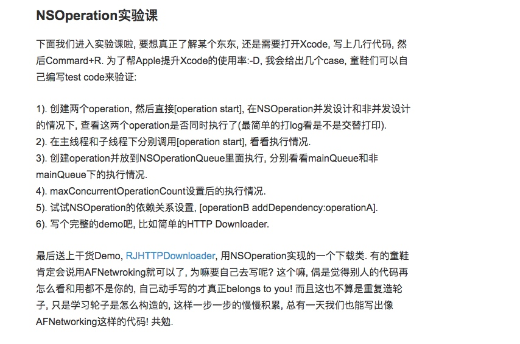

NSRunLoop
实际上，Run loop并不像 GCD 或者操作队列那样是一种并发机制，因为它并不能并行执行任务。不过在主 dispatch/operation队列中， run loop 将直接配合任务的执行，它提供了一种异步执行代码的机制。
一个 run loop 总是绑定到某个特定的线程中。main run loop 是与主线程相关的
在每一个 Cocoa 和 CocoaTouch 程序中，这个 main run loop 都扮演了一个核心角色，它负责处理 UI 事件、计时器，以及其它内核相关事件。无论你什么时候设置计时器、使用NSURLConnection或者调用 performSelector:withObject:afterDelay:，其实背后都是 run loop 在处理这些异步任务。
run loop 可以运行在不同的模式中，每种模式都定义了一组事件，供 run loop 做出响应。这在对应 main run loop 中暂时性的将某个任务优先执行的一种聪明的做法。 * NSDefalutRunLoopMode : 默认Mode, 通常主线程在这个模式下运行 * UITrackingRunLoopMode : 滑动ScrollView是会切换到这个模式 * NSRunLoopCommonModes: 包括上面两个模式
例1:滑动ScrollView后系统把RunLoop切换为UITrackingRunLoopMode,因此加载默认模式中的定时器并不会执行,只有滚动停止回到默认模式才会继续执行。我们可以把定时器设为 NSRunLoopCommonModes的模式，并添加到 run loop 中；
[[NSRunLoop currentRunLoop] addTimer:timer forMode:NSRunLoopCommonModes];
例2:当tableview的cell从网络异步加载图片, 加载完成后在主线程刷新显示图片, 这时滑动tableview会造成卡顿. 通常的思路是tableview滑动的时候延迟加载图片, 等停止滑动时再显示图片. 这里我们可以通过RunLoop来实现.
[self.cellImageView performSelector:@sector(setImage:) withObject:downloadedImage afterDelay:0 inModes:@[NSDefaultRunLoopMode]];
主线程一般来说都已经配置好了 main run loop。然而其他线程默认情况下都没有设置 run loop。你也可以自行为其他线程设置 run loop ，但是一般来说我们很少需要这么做。大多数时间使用 main run loop 会容易得多。如果你需要处理一些很重的工作，但是又不想在主线程里做，你仍然可以在你的代码在 main run loop 中被调用后将工作分配给其他队列。Chris 在他关于常见的后台实践的文章里阐述了一些关于这种模式的很好的例子。
如果你真需要在别的线程中添加一个 run loop ，那么不要忘记在 run loop 中至少添加一个 input source 。如果 run loop 中没有设置好的 input source，那么每次运行这个 run loop ，它都会立即退出。

[NSOperation](http://www.jianshu.com/p/4b1d77054b35)
与GCD相比好处: 1. NSOperation是基于GCD之上的更高一层封装, 拥有更多的API(e.g. suspend, resume, cancel等等). 2. 在NSOperationQueue中, 可以指定各个NSOperation之间的依赖关系 3. 用KVO可以方便的监测NSOperation的状态(isExecuted, isFinished, isCancelled). 4. 更高的可定制能力, 你可以继承NSOperation实现可复用的逻辑模块.
NSOperation和NSOperationQueue
NSOpration是苹果公司对GCD的封装，NSOperation和MSOprationQueue分别对应GCD中的任务和队列
因此操作步骤如下：
1. 将要执行的任务封装到NSOperation对象中
2. 将任务添加到一个NSOprationQueue对象中
添加任务
NSOperation是一个抽象类，所以不能封装任务。但他有两个子类可以封装任务。分别为：NSInvocationOperation和NSBlockOperation。创建之后需要start启动，默认在当前队列同步执行当然也可以用cancle在中途取消任务
在不使用NSOperationQueue，单独使用NSOperation的情况下系统同步执行操作:
//1.创建NSInvocationOperation对象
NSInvocationOperation *operation = [[NSInvocationOperation alloc] initWithTarget:self selector:@selector(run) object:nil];
//2.开始执行
[operation start];
/**
在没有使用NSOperationQueue、单独使用NSInvocationOperation的情况下，
NSInvocationOperation在主线程执行操作，并没有开启新线程。
*/
在swift中这种方法是不是类型安全的（推荐第二种）
//1.创建NSBlockOperation对象
NSBlockOperation *operation = [NSBlockOperation blockOperationWithBlock:^{
NSLog(@"%@", [NSThread currentThread]);
}];
//2.开始任务
[operation start];
默认会在当前线程中执行。但是NSBlockOperation还有一个方法addExecutionBlock:，通过这个方法会给Operation添加多个执行Block。这样的话Operation中的任务会并发执行，他会在主线程和其他多个线程执行这些任务
```Object-c
//1.创建NSBlockOperation对象
NSBlockOperation *operation = [NSBlockOperation blockOperationWithBlock:{
NSLog(@"%@", [NSThread currentThread]);
}];
//添加多个Block
for (NSInteger i = 0; i < 5; i++) {
[operation addExecutionBlock:^{
NSLog(@"第%ld次：%@", i, [NSThread currentThread]);
}];
}
//2.开始任务
[operation start];
/**
可以看出，blockOperationWithBlock:方法中的操作是在主线程中执行的，而
addExecutionBlock:方法中的操作是在其他线程中执行的。
*/
```
自定义Operation
除了上面的两种 Operation 以外，我们还可以自定义 Operation。自定义 Operation 需要继承 NSOperation 类，并实现其 main() 方法，因为在调用 start() 方法的时候，内部会调用 main() 方法完成相关逻辑。 在没有使用NSOperationQueue、单独使用自定义子类的情况下，是在主线程执行操作，并没有开启新线程。
注意:
NSOperation可以自己独立执行(直接调用[operation start]), 也可以放到NSOperationQueue里面执行, 这两种情况下是否并发执行是不同的.
1. non-concurrent
NSOperation默认是非并发的(non-concurrent),果你把operation放到某个线程执行, 它会一直block住该线程, 直到operation finished.
对于非并发的operation你只需要继承NSOperation, 然后重写main()方法即可
示例:下载一张:
/**
由于NSOperation是可以cancel的, 所以你需要在operation程序内部执行过程中判断当前
operation是否已经被cancel了(isCancelled). 如果已经被cancel那就不往下执行了. 当你在外面
调用[operation cancel]后, isCancelled会被置为YES.
*/
@implementation YourOperation
- (void)main
{
@autoreleasepool {
if (self.isCancelled) return;
NSData *imageData = [[NSData alloc] initWithContentsOfURL:imageURL];
if (self.isCancelled) { imageData = nil; return; }
if (imageData) {
UIImage *downloadedImage = [UIImage imageWithData:imageData];
}
imageData = nil;
if (self.isCancelled) return;
[self.delegate performSelectorOnMainThread:@selector(imageDownloaderDidFinish:)
withObject:downloadedImage
waitUntilDone:NO];
}
}
@end
1. Concurrent
NSOperation有三个状态量isCancelled, isExecuting和isFinished. isCancelled上面解释过. main函数执行完成后, isExecuting会被置为NO, 而isFinished则被置为YES.
那肿么实现并发(concurrent)的NSOperation呢? 也很简单: 1). 重写isConcurrent函数, 返回YES, 这个告诉系统各单位注意了我这个operation是要并发的. 2). 重写start()函数. 3). 重写isExecuting和isFinished函数 4). 有必要时需要重写isCanceled函数
为什么在并发情况下需要自己来设定isExecuting和isFinished这两个状态量呢? 因为在并发情况下系统不知道operation什么时候finished, operation里面的task一般来说是异步执行的, 也就是start函数返回了operation不一定就是finish了, 这个你自己来控制, 你什么时候将isFinished置为YES(发送相应的KVO消息), operation就什么时候完成了.
- (BOOL)isConcurrent {
return YES;
}
- (void)start
{
[self willChangeValueForKey:@"isExecuting"];
_isExecuting = YES;
[self didChangeValueForKey:@"isExecuting"];
NSURLRequest * request = [NSURLRequest requestWithURL:imageURL];
_connection = [[NSURLConnection alloc] initWithRequest:request
delegate:self];
if (_connection == nil) [self finish];
}
- (void)finish
{
self.connection = nil;
[self willChangeValueForKey:@"isExecuting"];
[self willChangeValueForKey:@"isFinished"];
_isExecuting = NO;
_isFinished = YES;
[self didChangeValueForKey:@"isExecuting"];
[self didChangeValueForKey:@"isFinished"];
}
#pragma mark - NSURLConnection delegate
- (void)connection:(NSURLConnection *)connection didReceiveResponse:(NSURLResponse *)response {
// to do something...
}
- (void)connection:(NSURLConnection *)connection didReceiveData:(NSData *)data {
// to do something...
}
- (void)connectionDidFinishLoading:(NSURLConnection *)connection {
[self finish];
}
- (void)connection:(NSURLConnection *)connection didFailWithError:(NSError *)error {
[self finish];
}
@end
还有以下几点需要注意: * operation的executing和finished状态量需要用willChangeValueForKey/didChangeValueForKey来触发KVO消息. * 在调用完NSURLConnection之后start函数就返回了, 后面就坐等connection的回调了 * 在connection的didFinish或didFail回调里面设置operation的finish状态, 告诉系统operation执行完毕了.
注意: 如果你是在主线程调用的这个并发的operation, 那一切都是非常的perfect, 就算你当前在操作UI也不影响operation的下载操作. BUT, 如果你是在子线程调用的, 或者把operation加到了非main queue, 那么问题来了, 你会发现这货的NSURLConnection delegate不走了.
这是runLoop的原因，主线程会自动创建一个RunLoop来保证程序一直运行. 但子线程默认不创建NSRunLoop, 所以子线程的任务一旦返回, 线程就over了.上面的并发operation当start函数返回后子线程就退出了, 当NSURLConnection的delegate回调时, 线程已经木有了, 所以你也就收不到回调了. 为了保证子线程持续live(等待connection回调), 你需要在子线程中加入RunLoop, 来保证它不会被kill掉. 详细关于RunLoop的知识可以查看 并发编程Runloop
对于这个问题:我们解决办法 1. 让start函数在主线程运行(即使[operation start]是在子线程调用的).
```Object-c
- (void)start
{
if (![NSThread isMainThread]) {
[self performSelectorOnMainThread:@selector(start)
withObject:nil
waitUntilDone:NO];
return;
}
// set up NSURLConnection...
}
或者
- (void)start
{
[[NSOperationQueue mainQueue] addOperationWithBlock:^{
self.connection = [NSURLConnection connectionWithRequest:self.request delegate:self];
}];
}
```
方法二是:让
operation的start函数在子线程运行, 但是我们为它创建一个RunLoop. 然后把URL connection schedule到上面去. （这种方法不推荐）//参考AFNetWorking的做法 + (void)networkRequestThreadEntryPoint:(id)__unused object { @autoreleasepool { [[NSThread currentThread] setName:@"AFNetworking"]; NSRunLoop *runLoop = [NSRunLoop currentRunLoop]; [runLoop addPort:[NSMachPort port] forMode:NSDefaultRunLoopMode]; [runLoop run]; } } + (NSThread *)networkRequestThread { static NSThread *_networkRequestThread = nil; static dispatch_once_t oncePredicate; dispatch_once(&oncePredicate, ^{ _networkRequestThread = [[NSThread alloc] initWithTarget:self selector:@selector(networkRequestThreadEntryPoint:) object:nil]; [_networkRequestThread start]; }); return _networkRequestThread; } - (void)start { [self.lock lock]; if ([self isCancelled]) { [self performSelector:@selector(cancelConnection) onThread:[[self class] networkRequestThread] withObject:nil waitUntilDone:NO modes:[self.runLoopModes allObjects]]; } else if ([self isReady]) { self.state = AFOperationExecutingState; [self performSelector:@selector(operationDidStart) onThread:[[self class] networkRequestThread] withObject:nil waitUntilDone:NO modes:[self.runLoopModes allObjects]]; } [self.lock unlock]; }AFNetworking创建了一个新的子线程(在子线程中调用NSRunLoop *runloop = [NSRunLoop currentRunLoop]; 获取RunLoop对象的时候, 就会创建RunLoop), 然后把它加到RunLoop里面来保证它一直运行.
这边我们可以简单的判断下当前start()的线程是子线程还是主线程, 如果是子线程则调用[NSRunLoop currentRunLoop]创新RunLoop, 否则就直接调用[NSRunLoop mainRunLoop], 当然在主线程下就没必要调用[runLoop run]了, 因为它本来就是一直run的. 我们还可以使用CFRunLoop来启动和停止RunLoop
[self.connection scheduleInRunLoop:[NSRunLoop currentRunLoop] forMode:NSRunLoopCommonModes]; CFRunLoopRun();等到该Operation结束的时候, 一定要记得调用CFRunLoopStop()停止当前线程的RunLoop, 让当前线程在operation finished之后可以退出.
NSOperationQueue
看过上面的内容就知道，我们可以调用一个 NSOperation 对象的 start() 方法来启动这个任务，但是这样做他们默认是 同步执行 的。就算是 addExecutionBlock 方法，也会在 当前线程和其他线程 中执行，也就是说还是会占用当前线程。这是就要用到队列 NSOperationQueue 了。而且，按类型来说的话一共有两种类型：主队列、其他队列。只要添加到队列，会自动调用任务的 start() 方法
一旦NSOperation被add到Queue里面那么我们就不care它自身是不是并发设计的了, 因为被add到Queue里面的operation必定是并发的. 而且我们可以设置Queue的maxConcurrentOperationCount来指定最大的并发数(也就是几个operation可以同时被执行, 如果这个值设为1, 那这个Queue就是串行队列了). Queue会为每一个add到队列里面的operation创建一个线程来运行其start函数, 这样每个start都分布在不同的线程里面来实现operation们的并发执行. 注意: ** 我们这边所说的并发都是指NSOperation之间的并发(多个operation同时执行), 如果maxConcurrentOperationCount设置为1或者把operation放到[NSOperationQueue mainQueue]里面执行, 那它们只会顺序(Serial)执行, 当然就不可能并发了.**
* 主队列
细心同学会发现，每套多线程方案都会有一个主线程。这是一个特殊的线程必须串行。凡是添加到主队列中的任务（NSOperation），都会放到主线程中执行
//OBJECTIVE-C
NSOperationQueue *queue = [NSOperationQueue mainQueue];
//SWIFT
let queue = NSOperationQueue.mainQueue()
* 其他队列
通过初始化产生的队列就是其他队列了，其他队列不需要名字
注意：其他队列会在其他线程中并行执行
```Object-c
//1.创建一个其他队列
NSOperationQueue *queue = [[NSOperationQueue alloc] init];
//2.创建NSBlockOperation对象
NSBlockOperation *operation = [NSBlockOperation blockOperationWithBlock:^{
NSLog(@"%@", [NSThread currentThread]);
}];
//3.添加多个Block
for (NSInteger i = 0; i < 5; i++) {
[operation addExecutionBlock:^{
NSLog(@"第%ld次：%@", i, [NSThread currentThread]);
}];
}
//4.队列添加任务
[queue addOperation:operation];
/**
NSInvocationOperation和NSOperationQueue结合后能够开启新线程，进行并发执行
NSBlockOperation和NSOperationQueue也能够开启新线程，进行并发执行
*/
`- (void)addOperationWithBlock:(void (^)(void))block;`
无需先创建任务，在block中添加任务，直接将任务block加入到队列中,能够开启新线程，进行并发执行。
****
这时如果我们想要任务在其他线程串行执行
`NSOperationQueue`有个参数`maxConcurrentOperationCount`最大并发数，设置为1时就是串行了
`maxConcurrentOperationCount`默认情况下为-1，表示不进行限制，默认为并发执行。
`maxConcurrentOperationCount`大于1时，进行并发执行，当然这个值不应超过系统限制，即使自己设置一个很大的值，系统也会自动调整
###操作依赖
`NSOperation`还有个实用功能添加依赖。比如有 3 个任务：A: 从服务器上下载一张图片，B：给这张图片加个水印，C：把图片返回给服务器。这时就可以用到依赖了:
```Object-c
//1.任务一：下载图片
NSBlockOperation *operation1 = [NSBlockOperation blockOperationWithBlock:^{
NSLog(@"下载图片 - %@", [NSThread currentThread]);
[NSThread sleepForTimeInterval:1.0];
}];
//2.任务二：打水印
NSBlockOperation *operation2 = [NSBlockOperation blockOperationWithBlock:^{
NSLog(@"打水印 - %@", [NSThread currentThread]);
[NSThread sleepForTimeInterval:1.0];
}];
//3.任务三：上传图片
NSBlockOperation *operation3 = [NSBlockOperation blockOperationWithBlock:^{
NSLog(@"上传图片 - %@", [NSThread currentThread]);
[NSThread sleepForTimeInterval:1.0];
}];
//4.设置依赖
[operation2 addDependency:operation1]; //任务二依赖任务一
[operation3 addDependency:operation2]; //任务三依赖任务二
//5.创建队列并加入任务
NSOperationQueue *queue = [[NSOperationQueue alloc] init];
[queue addOperations:@[operation3, operation2, operation1] waitUntilFinished:NO];
注意不能添加互相依赖否则会锁死
可以用removeDependency来解除依赖
注意:
如果我在子线程调用[operation start]函数, 或者把operation放到非MainQueue里面执行, 但是在operation的内部把start抛到主线程来执行(利用主线程的main run loop), 那多个operation其实不都是要在主线程执行的么, 这样还能并发? Luckily, 仍然是并发执行的,当然这个并发指的是狭义并发也就是主线程进行伪并行

其他方法
NSOperation
BOOL executing; //判断任务是否正在执行 BOOL finished; //判断任务是否完成 void (^completionBlock)(void); //用来设置完成后需要执行的操作 - (void)cancel; //取消任务 `NSOperation`提供的方法，可取消单个操作 - (void)waitUntilFinished; //阻塞当前线程直到此任务执行完毕NSOperationQueue
NSUInteger operationCount; //获取队列的任务数 - (void)cancelAllOperations; //取消队列中所有的任务 - (void)waitUntilAllOperationsAreFinished; //阻塞当前线程直到此队列中的所有任务执行完毕 [queue setSuspended:YES]; // 暂停queue [queue setSuspended:NO]; // 继续queue
与君共勉


并发编程实践
1.GCD OR 操作队列
这两个是目前我们在iOS中用的最多的两套API
- 操作队列提供了在 GCD 中不那么容易复制的有用特性。其中最重要的一个就是可以取消在任务处理队列中的任务
- 操作队列在管理操作间的依赖关系方面也容易一些
- CD 给予你更多的控制权力以及操作队列中所不能使用的底层函数 扩展阅读: StackOverflow: NSOperation vs. Grand Central Dispatch Blog: When to use NSOperation vs. GCD
2.后台的Core Data
在着手 Core Data 的并行处理之前，最好先打一些基础。我们强烈建议通读苹果的官方文档 Concurrency with Core Data
Xcode 所提供的 Core Data 标准模版中，所设立的是运行在主线程中的一个存储调度 (persistent store coordinator)和一个托管对象上下文 (managed object context) 的方式。在很多情况下，这种模式可以运行良好。创建新的对象和修改已存在的对象开销都非常小，也都能在主线程中没有困难地完成。然后，如果你想要做大量的处理，那么把它放到一个后台上下文来做会比较好。一个典型的应用场景是将大量数据导入到 Core Data 中。
示例: 我们要导入一大组柏林的交通数据。在导入的过程中，我们展示一个进度条，如果耗时太长，我们希望可以取消当前的导入操作。同时，我们显示一个随着数据加入可以自动更新的 table view 来展示目前可用的数据。
解决方案:
我们创建一个NSOperation 的子类，将其叫做ImportOperation，我们通过重写 main方法，用来处理所有的导入工作。这里我们使用NSPrivateQueueConcurrencyType来创建一个独立并拥有自己的私有dispatch queue的 managed object context，这个 context 需要管理自己的队列。在队列中的所有操作必须使用performBlock或者performBlockAndWait来进行触发。
NSManagedObjectContext* context = [[NSManagedObjectContext alloc] initWithConcurrencyType:NSPrivateQueueConcurrencyType];
context.persistentStoreCoordinator = self.persistentStoreCoordinator;
context.undoManager = nil;
//performBlockAndWait:Synchronously performs a given block on the receiver’s queue.
[self.context performBlockAndWait:^
{
[self import];
}];
在这里我们重用了已经存在的persistent store coordinator。一般来说，初始化 managed object contexts 要么使用NSPrivateQueueConcurrencyType，要么使用 NSMainQueueConcurrencyType。
导入文件内容
/**
在导入前，我们枚举文件中的各行，并对可以解析的每一行创建 managed object ：
*/
[lines enumerateObjectsUsingBlock:
^(NSString* line, NSUInteger idx, BOOL* shouldStop)
{
NSArray* components = [line csvComponents];
if(components.count < 5) {
NSLog(@"couldn't parse: %@", components);
return;
}
[Stop importCSVComponents:components intoContext:context];
}];
/**
在 view controller 中通过以下代码来开始操作：
*/
ImportOperation* operation = [[ImportOperation alloc]
initWithStore:self.store fileName:fileName];
[self.operationQueue addOperation:operation];
/**
至此为止，后台导入部分已经完成。接下来，我们要加入取消功能，这其实非常简单，只需要枚举的 block 中加一个判断就行了：
*/
if(self.isCancelled) {
*shouldStop = YES;
return;
}
/**
最后为了支持进度条，我们在 operation 中创建一个叫做 progressCallback 的属性。需要注意的是，更新进度条必须在主线程中完成，否则会导致 UIKit 崩溃。
*/
operation.progressCallback = ^(float progress)
{
[[NSOperationQueue mainQueue] addOperationWithBlock:^
{
self.progressIndicator.progress = progress;
}];
};
//我们在枚举中来调用这个进度条更新的 block 的操作：
self.progressCallback(idx / (float) count);
// 然而，如果你执行示例代码的话，你会发现它运行逐渐变得很慢，取消操作也有迟滞。这是因为主操作队列中塞满了要更新进度条的 block 操作。一个简单的解决方法是降低更新的频度，比如只在每导入一百行时更新一次：
NSInteger progressGranularity = 100;
if (idx % progressGranularity == 0) {
self.progressCallback(idx / (float) count);
}
更新 Main Context
在让一切运转起来之前之前，还有一件事情要做。现在在后台 context 中导入的数据还不能传送到主 context 中，除非我们显式地让它这么去做。我们在Store类的设置Core Data stack的init方法中加入下面的代码：
[NSNotificationCenter defaultCenter]
addObserverForName:NSManagedObjectContextDidSaveNotification
object:nil
queue:nil
usingBlock:^(NSNotification* note)
{
NSManagedObjectContext *moc = self.mainManagedObjectContext;
if (note.object != moc)
[moc performBlock:^(){
[moc mergeChangesFromContextDidSaveNotification:note];
}];
}];
}];
/**
如果 block 在主队列中被作为参数传递的话，那么这个 block 也会在主队列中被执行。如果现在你运行程序的话，你会注意到 table view 会在完成导入数据后刷新数据，但是这个行为会阻塞用户大概几秒钟。
要修正这个问题，我们需要做一些无论如何都应该做的事情：批量保存。在导入较大的数据时，我们需要定期保存，逐渐导入，否则内存很可能就会被耗光，性能一般也会更坏。而且，定期保存也可以分散主线程在更新 table view 时的工作压力。
合理的保存的次数可以通过试错得到。保存太频繁的话，可能会在 I/O 操作上花太多时间；保存次数太少的话，应用会变得无响应。在经过一些尝试后，我们设定每 250 次导入就保存一次。改进后，导入过程变得很平滑，它可以适时更新 table view，也没有阻塞主 context 太久。
*/
其他考虑
在导入操作时，我们将整个文件都读入到一个字符串中，然后将其分割成行。这种处理方式对于相对小的文件来说没有问题，但是对于大文件，最好采用惰性读取 (lazily read) 的方式逐行读入。本文最后的示例将使用输入流的方式来实现这个特性，在 StackOverflow 上 Dave DeLong 也提供了一段非常好的示例代码来说明这个问题。
在 app 第一次运行时，除开将大量数据导入 Core Data 这一选择以外，你也可以在你的 app bundle 中直接放一个 sqlite 文件，或者从一个可以动态生成数据的服务器下载。如果使用这些方式的话，可以节省不少在设备上的处理时间。
最后，最近对于 child contexts 有很多争议。我们的建议是不要在后台操作中使用它。如果你以主 context 的 child 的方式创建了一个后台 context 的话，保存这个后台 context 将阻塞主线程。而要是将主 context 作为后台 context 的 child 的话，实际上和与创建两个传统的独立 contexts 来说是没有区别的。因为你仍然需要手动将后台的改变合并回主 context 中去。
设置一个 persistent store coordinator 和两个独立的 contexts 被证明了是在后台处理 Core Data 的好方法。除非你有足够好的理由，否则在处理时你应该坚持使用这种方式。
3.后台 UI 代码
首先要强调：UIKit 只能在主线程上运行。而那部分不与 UIKit 直接相关，却会消耗大量时间的 UI 代码可以被移动到后台去处理，以避免其将主线程阻塞太久。但是在你将你的 UI 代码移到后台队列之前，你应该好好地测量哪一部分才是你代码中的瓶颈。这非常重要，否则你所做的优化根本是南辕北辙。
如果你找到了你能够隔离出的昂贵操作的话，可以将其放到操作队列中去：
__weak id weakSelf = self;
[self.operationQueue addOperationWithBlock:^{
NSNumber* result = findLargestMersennePrime();
[[NSOperationQueue mainQueue] addOperationWithBlock:^{
MyClass* strongSelf = weakSelf;
strongSelf.textLabel.text = [result stringValue];
}];
}];
如你所见，这些代码其实一点也不直接明了。我们首先声明了一个 weak 引用来参照 self，否则会形成循环引用（ block 持有了 self，私有的 operationQueue retain 了 block，而 self 又 retain 了 operationQueue ）。为了避免在运行 block 时访问到已被释放的对象，在 block 中我们又需要将其转回 strong 引用。
4.后台绘制
如果你确定drawRect:是你的应用的性能瓶颈，那么你可以将这些绘制代码放到后台去做。但是在你这样做之前，检查下看看是不是有其他方法来解决，比如、考虑使用core animation layers或者预先渲染图片而不去做Core Graphics绘制。
解决方案:
其实解决起来也很简单，把drawRect:中的代码放到一个后台操作中去做就可以了。然后将原本打算绘制的视图用一个 image view 来替换，等到操作执行完后再去更新。在绘制的方法中，使用 UIGraphicsBeginImageContextWithOptions来取代UIGraphicsGetCurrentContext ：
UIGraphicsBeginImageContextWithOptions(size, NO, 0);
// drawing code here
UIImage *i = UIGraphicsGetImageFromCurrentImageContext();
UIGraphicsEndImageContext();
return i;
/**
通过在第三个参数中传入 0 ，设备的主屏幕的 scale 将被自动传入，这将使图片在普通设备和
retina 屏幕上都有良好的表现。
*/
注意:
如果你在 table view 或者是 collection view 的 cell 上做了自定义绘制的话，最好将它们放入 operation 的子类中去。你可以将它们添加到后台操作队列，也可以在用户将 cell 滚动出边界时的 didEndDisplayingCell 委托方法中进行取消。这些技巧都在 2012 年的WWDC Session 211 -- Building Concurrent User Interfaces on iOS中有详细阐述。
除了在后台自己调度绘制代码，以也可以试试看使用 CALayer 的 drawsAsynchronously 属性。然而你需要精心衡量这样做的效果，因为有时候它能使绘制加速，有时候却适得其反。
4.异步网络请求处理
所有的网络请求都应该通过异步的方式进行
// 警告：不要使用这些代码。
dispatch_async(backgroundQueue, ^{
NSData* contents = [NSData dataWithContentsOfURL:url]
dispatch_async(dispatch_get_main_queue(), ^{
// 处理取到的日期
});
});
//这段代码问题：没有办法去取消这个同步的网络请求。它将阻塞住线程直到它完成。如果请求一直没结果，那就只能干等到超时
要解决上面的困境，我们可以使用NSURLConnection的异步方法，并且把所有操作转化为 operation 来执行. NSURLConnection 是通过run loop来发送事件的。因为事件发送不会花多少时间，因此最简单的是就只使用 main run loop 来做这个。然后，我们就可以用后台线程来处理输入的数据了。
要处理URL 连接，我们重写自定义的 operation 子类中的 start 方法：
- (void)start
{
NSURLRequest* request = [NSURLRequest requestWithURL:self.url];
self.isExecuting = YES;
self.isFinished = NO;
[[NSOperationQueue mainQueue] addOperationWithBlock:^
{
self.connection = [NSURLConnectionconnectionWithRequest:request
delegate:self];
}];
}
由于重写的是 start 方法，所以我们需要自己要管理操作的 isExecuting 和 isFinished 状态。要取消一个操作，我们需要取消 connection ，并且设定合适的标记，这样操作队列才知道操作已经完成。
- (void)connectionDidFinishLoading:(NSURLConnection *)connection
{
self.data = self.buffer;
self.buffer = nil;
self.isExecuting = NO;
self.isFinished = YES;
}
Demo下载
因此:我们总结如下:建议要么你花时间来把事情做对做好，要么就直接使用像AFNetworking这样的框架
其实 AFNetworking 还提供了不少好用的小工具，比如有个 UIImageView 的 category，来负责异步地从一个 URL 加载图片。在你的 table view 里使用的话，还能自动帮你处理取消加载操作，非常方便。
5.进阶：后台文件 I/O
一次性将文件读入内存中对于较小的文件可能没什么问题,但是对于大文件来说就并不友好。
我们将构建一个类，它负责一行一行读取文件而不是一次将整个文件读入内存，另外要在后台队列处理文件，以保持应用相应用户的操作。
为了达到这个目的，我们使用能让我们异步处理文件的NSInputStream
如果你总是需要从头到尾来读/写文件的话，streams 提供了一个简单的接口来异步完成这个操作
不管你是否使用 streams，大体上逐行读取一个文件的模式是这样的：
- 建立一个中间缓冲层以提供，当没有找到换行符号的时候可以向其中添加数据
- 从 stream 中读取一块数据
- 对于这块数据中发现的每一个换行符，取中间缓冲层，向其中添加数据，直到（并包括）这个换行符，并将其输出
- 将剩余的字节添加到中间缓冲层去
绝大部分时候，使用逐块读入的方式来处理大文件，是非常有用的技术。
总结
在主队列中接收事件或者数据，然后用后台操作队列来执行实际操作，然后回到主队列去传递结果，遵循这样的原则来编写尽量简单的并行代码，将是保证高效正确的不二法则。

Copyright © 2015 Powered by MWeb, Theme used GitHub CSS.